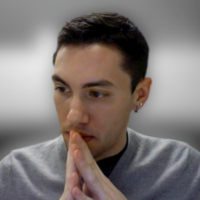
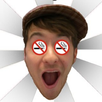

Matt Ratleph
Matt is one of the co-founders of Umberlas and he lives in Wheaton, IL. He makes ambient and downtempo with a glitchy flavor. He also collaborates with Billy Battle for the Umberlas Community Project releases.

Billy Battle
Billy Battle is one of the co-founders of Umberlas and he lives in Oswego, IL. He makes experimental acoustic music. He also collaborates with Matt Ratleph for the Umberlas Community Project releases.